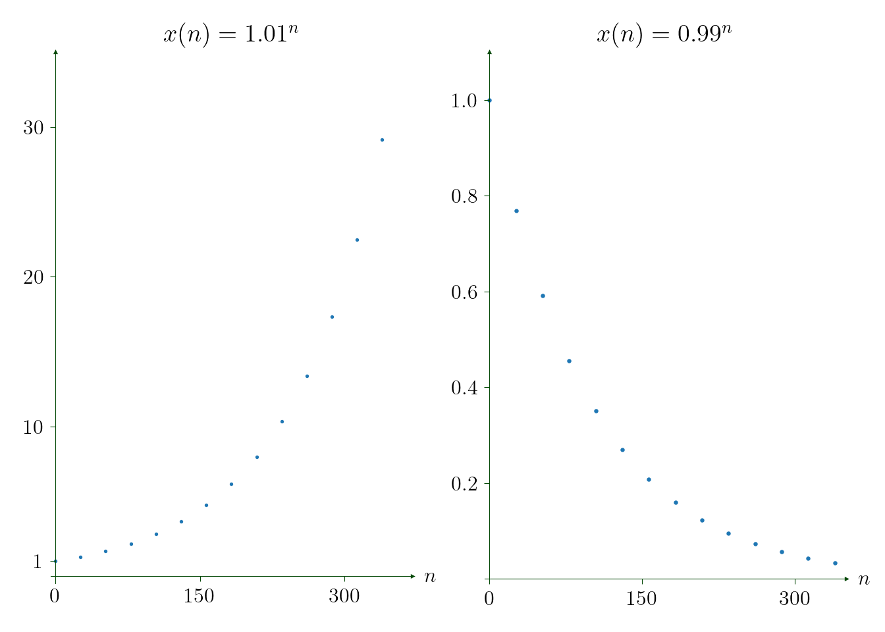
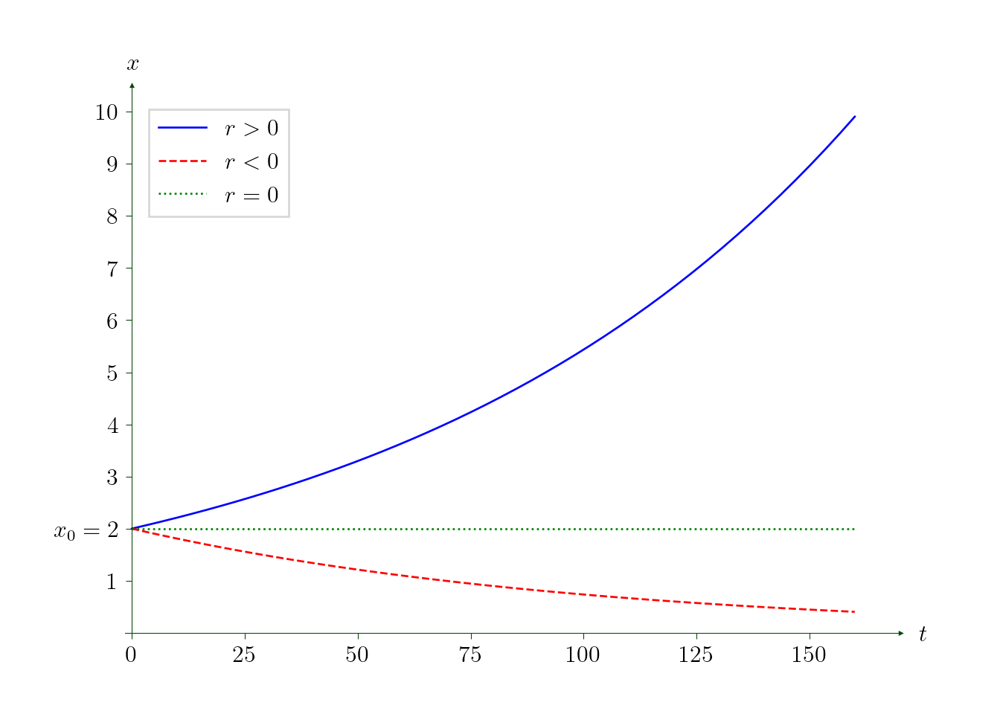

1 Introduction
1.1 Definition
Dynamical system describes how a point in a space evolves in time.
The space is called the state space. It may be e.g. a Euclidean space or more abstract space (metric, topological etc.). We will deal mostly with \({\mathbb{R}}\) (this chapter) and \({\mathbb{R}}^2\) (next chapter).
1.2 Discrete time vs. continuous time
Let \({\mathbb{R}}\) be the state space, and let \(x\in{\mathbb{R}}\) be a point. Let \(f:{\mathbb{R}}\to{\mathbb{R}}\).
- If time changes discretely, e.g. \(n=0,1,2,\ldots\), the dynamical system is given through a difference equation, e.g.
\[ x(n+1)=f\bigl( x(n) \bigr). \tag{1.1}\]
- If time changes continuously, e.g. \(t\in\color{RedViolet}{\mathbb{R}_+:=[0,\infty)}\), the dynamical system is give through a differential equation, e.g.
\[ x'(t)=f\bigl( x(t) \bigr). \tag{1.2}\]
- For both difference and differential equation one can consider an initial condition: the value of \(x\) at a fixed “initial” moment of time, e.g. at time \(0\):
\[ x(0)=x_0\in{\mathbb{R}}. \tag{1.3}\]
The difference equation (1.1) can be then successively solved: \[ \begin{aligned} x(1)&=f(x(0))=f(x_0),\\ x(2)&=f(x(1))=f(f(x_0)), \end{aligned} \] and so on. For some “simple” difference equations one can even find an explicit formula for \(x(n)\) as a function of \(n\in{\mathbb{N}}\cup\{0\}\).
The differential equation (1.2) also can be solved in very limited cases: this is an equation with separated variables, hence one needs that \(\int \frac{1}{f(x)} dx\) can be integrated explicitly that is, typically, not the case.
Actually, the course of the dynamical systems is about how to get properties of solutions when one can not find the solutions explicitly.
1.3 Remark
It may look more natural if we write \(x_n\) instead of \(x(n)\). We use here the latter notation to stress that \(x\) is a function of (discrete) time.
We may be interested not only in the behaviour of solutions for `future times’, but also for the past times. In this case one can consider e.g. discrete time \(n\in {\mathbb{Z}}\) or continuous time \(t\in{\mathbb{R}}\).
1.4 Example: Compound interest
Let, for an \(r\in(0,1)\), \(f(x)=(1+r)x\), and
\[ x(n+1)=f\bigl(x(n)\bigr)=(1+r)x(n), \]
where \(x(n)\) represents money on an account at the end of the year \(n\). Therefore, after the year \(n+1\) the existing money \(x(n)\) will increase on \(r x(n)\) i.e. \(r\) represents the interest rate. Then, if initially there was \(x(0)=x_0>0\) on that account, we get that
\[ x(n)=x_0(1+r)^n . \]
We normally expects a positive interest rate, i.e. \(r\in(0,1)\). Then, naturally, \(x(n)\) increases when \(n\) rises. If, however, \(r\in(-1,0)\), then \(0<1+r<1\) and \(x(n)\) decreases when \(n\) rises. Let \(x(0)=1\) and let \(n\) represent days of year, and \(x(n)\) represents the productivity. Then, for \(r=0.01\),
\[ x(365)=(1+0.01)^{365} \cdot 1 \approx 37.783, \]
whereas, for \(r=-0.01\),
\[ x(365)=(1-0.01)^{365} \cdot 1 \approx 0.026. \]
1.5 Example: Malthus equation
Let, for \(r\in{\mathbb{R}}\), \(f(x)=r x\) and
\[ x'(t) = f\bigl(x(t)\bigr) = r x(t). \tag{1.4}\]
Separating variables one gets \[ \frac{dx}{dt}=r x, \qquad \frac{dx}{x}=r dt, \qquad \ln|x|=rt+C, \]
for a \(C\in{\mathbb{R}}\), and hence \(x(t)=C_1 e^{rt}\), where \(C_1=\pm e^C\in{\mathbb{R}}\).
Taking \(t=0\), we get \(C_1=x(0)=:x_0\). Then
\[ x(t)=x_0 e^{rt}. \]

1.6 From discrete to continuous time
Comparing solutions for the compound interest and for the Malthus equation (1.4): one can rewrite, respectively,
\[ x(t)=x_0(1+r)^t, \qquad t=n\in{\mathbb{N}}, \]
and
\[ x(t)= x_0 (e^r)^t, \qquad t\in\mathbb{R}_+. \]
Surely, the answers are different, but there is a simularity. Note that, for small values of \(|r|\), \(e^r\approx 1+r\), that follows from the Taylor expansion: \[ e^r = 1 +r + \frac{r^2}{2} + \ldots \]
To observe this simularity for any value of \(r\), suppose now that the interest rate is paid more often, for example, each \(\frac{1}{k}\) part of a year for some \(k\in{\mathbb{N}}\).
Then each year will be \(k\) payments, and after \(n\) years there will be \(nk\) payments.
Naturally, the interest for each payment will be smaller, for example, let it be \(\frac{r}{k}\).
Surely, the amount of money will be now different from the considered in Example 1.4, so we denote it by \(\tilde{x}(n)\).
We have then
\[ \begin{aligned} \tilde{x}(n)&=x_0 \Bigl(1+\frac{r}{k}\Bigr)^{nk} \\ & = x_0 \Bigl(1+\frac{r}{k}\Bigr)^{\frac{k}{r}r n}. \end{aligned} \]
Let now \(k\to\infty\), then the equality
\[ \lim_{k\to\infty} \Bigl(1+\frac{r}{k}\Bigr)^{\frac{k}{r}}=e \]
implies that
\[ \tilde{x}(n)=x_0 e^{r n}, \]
that coincides with the solution to the Malthus equation (at discrete moments of time).
1.7 Logistic-type model in discrete time
Rewriting the compound interest model in the equivalent form \[ x(n+1) - x(n) = rx(n), \] one gets the population model discovered by Thomas Malthus in 1798: the population of the UK increased each 10 years by the number proportional to the previous one. In reality, however, population growth has more complicated behaviour. For example, one can consider, for some \(g:{\mathbb{R}}\to{\mathbb{R}}\), \[ x(n+1) - x(n) = g\bigl(x(n)\bigr) \] We consider a logistic-type model where \(g(x)=rx(B-x)\) for some \(r,B>0\):
\[ x(n+1) - x(n) = r x(n) \bigl(B- x(n)\bigr). \]
Then
\[ \begin{aligned} x(n)&<B \Longrightarrow x(n+1) > x(n),\\ x(n)&=B \Longrightarrow x(n+1) = x(n),\\ x(n)&>B \Longrightarrow x(n+1) < x(n). \end{aligned} \]
Then, e.g. for \(x_0=x(0)=1.5<B=2\) and \(r=1\), one has
The solution oscillates around the value \(x=B\) and the amplitude of the oscillation decays with (discrete) time.
However, discrete-time dynamical systems are very sensitive to the values of parameters, the same model for \(r=0.1\) behaves as follows:
The rigorous analysis of discrete-time dynamical systems can be done, but it requires good knowledge of difference equations. Instead, in this course, we will deal with continuous-time dynamical systems and differential equations. Again, to get the continuous time analogue for the logistic-type model, one should assume that the changes take places very often, say, after time \(h>0\) rather than time \(1\), i.e. \[ x(t+h) - x(t) = r_h x(t) \bigl(B- x(t)\bigr). \] We wrote \(r_h\) as the rate should depend on \(h\). For example, one can consider \(r_h= rh\) for some constant \(r>0\). Then \[ \frac{x(t+h) - x(t)}{h} = r x(t) \bigl(B- x(t)\bigr). \] Passing \(h\) to \(0\), one gets a differential equation, called the logistic equation,
\[ x'(t) = r x(t) \bigl(B- x(t)\bigr). \tag{1.5}\]
In the next sections, we discuss how to analyse behaviour of solutions to certain classes of differential equations, including (1.5).